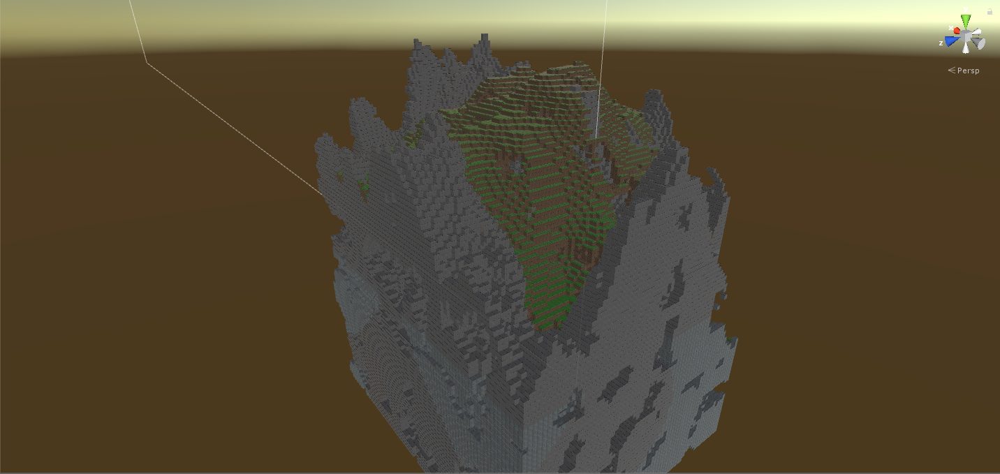
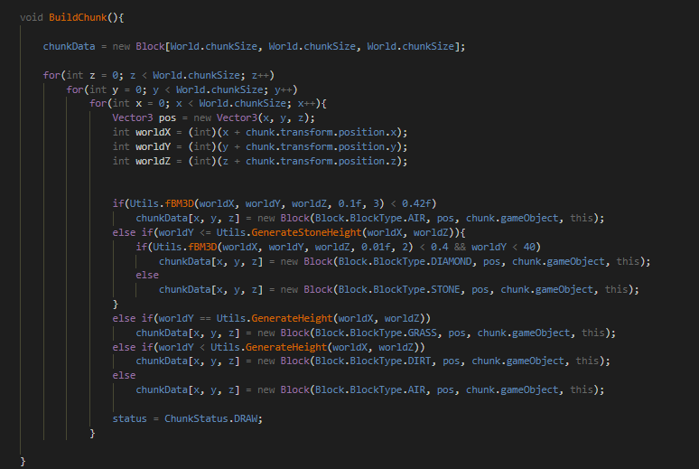

Minecraft Clone
At the moment of this page's creation, the project is in the state that it makes blocks and loads them in chunks. It also has ore geration and random map generation (the seed is always the same but that is only for development resons).
Right now i am working on beter loding time and the random ore spawns, Because right now only diamond will spawn in the world and in big quantities.
In the snipped bellow is the chunk generation based on a random generation. I use perlin noice to create a pseudorandom map and the ores in that map.
